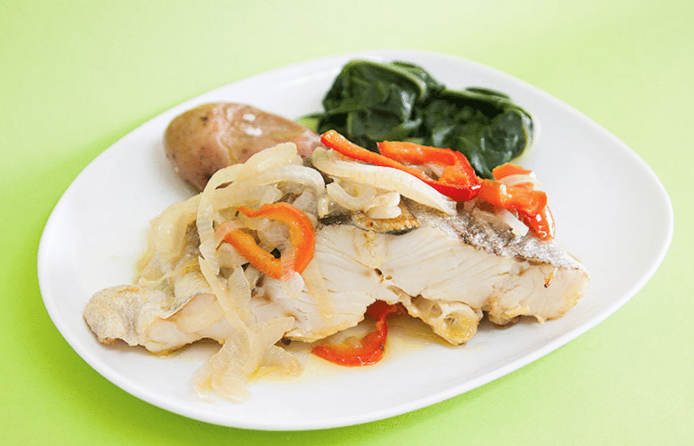

Bacalhau à Póvoa de Varzim
Ingredients
- 1 pound salted cod (bacalhau), soaked and shredded
- 4 large potatoes, thinly sliced into matchsticks
- 1 large onion, finely chopped
- 3 cloves garlic, minced
- 4 eggs, beaten
- 1/4 cup parsley, finely chopped
- 1/2 cup olive oil
- Salt and black pepper to taste
- 1 bay leaf
- Paprika for garnish (optional)

Preparation
-
Prepare the Salted Cod:
Soak the salted cod in cold water for at least 24 hours, changing the water several times to remove excess salt. Boil the cod in water for about 15 minutes, then drain and shred it into small pieces, removing any bones.
-
Cook the Potatoes:
In a large skillet, heat olive oil over medium heat. Add the thinly sliced potatoes and cook until they are golden and crispy. Remove the potatoes from the skillet and set aside.
-
Sauté Onion and Garlic:
In the same skillet, add more olive oil if needed. Sauté the chopped onion and minced garlic until they are soft and translucent.
-
Combine Cod and Potatoes:
Once the sautéed onions and garlic are ready, add the shredded cod to the skillet. Stir in the cooked potatoes.
-
Add Eggs:
Pour the beaten eggs over the cod and potato mixture. Stir continuously to combine and cook the eggs until they are just set.
-
Season and Garnish:
Season the mixture with salt, black pepper, and add a bay leaf for flavor. Stir in chopped parsley. Garnish with paprika if desired.
-
Serve:
Remove the bay leaf and serve Bacalhau hot. It's often accompanied by a side of olives.